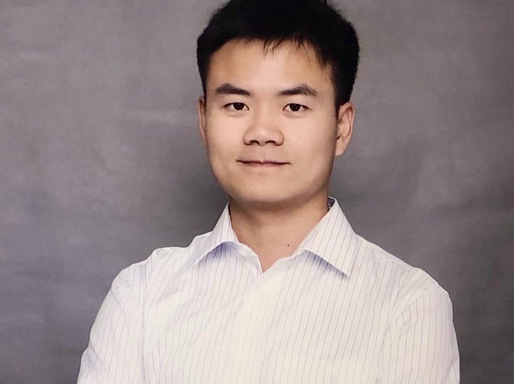

Kang Wu, MD, PhD
Physician Scientist | Neuroscience | Neuroimaging
I am a postdoctoral researcher at Beijing Anding Hospital, Capital Medical University, with a research focus on neuropsychiatry, brain–body interactions, and multimodal neuroimaging. My work investigates how interactions between the brain and peripheral physiological systems contribute to fatigue, vigilance dysfunction, and psychiatric symptoms. I am particularly interested in integrating MRI, electrophysiology, behavioral measures, and peripheral biomarkers to understand the neural and systemic mechanisms underlying individual differences in mental and physical states.
About Me
I am a physician and postdoctoral researcher at Beijing Anding Hospital, Capital Medical University, with clinical and research training spanning psychiatry, integrative medicine, and neuroscience. My academic work focuses on understanding the biological mechanisms underlying fatigue, vigilance dysfunction, and related neuropsychiatric symptoms. My research combines multimodal neuroimaging, electrophysiology, behavioral assessment, and peripheral biomarkers to investigate how the brain interacts with peripheral organs and physiological systems. I am particularly interested in brain–body communication, including thalamocortical regulation of vigilance, brain–metabolic interactions, and the neural mechanisms linking mental and physical fatigue. My long-term scientific goal is to develop a systems-level framework for understanding neuropsychiatric disorders as disturbances of coordinated brain–body regulation. By integrating clinical phenotyping with MRI, EEG, physiological measures, and molecular data, I hope to identify reproducible biomarkers and mechanistic pathways that can ultimately support more precise diagnosis and individualized intervention.
Research Interests
1. Brain–Body Interactions in Neuropsychiatric Disorders
Investigating how the brain communicates with peripheral organs and physiological systems, with a particular focus on brain–metabolic, brain–immune, and autonomic pathways involved in fatigue and psychiatric symptoms.
2. Neurobiology of Fatigue and Vigilance
Studying the neural mechanisms underlying fatigue, alertness, and behavioral instability using multimodal MRI, cognitive paradigms, physiological measurements, and peripheral biomarkers.
3. Multimodal Neuroimaging and Systems Neuroscience
Applying functional and structural MRI, diffusion imaging, EEG, normative modeling, and network-based approaches to characterize large-scale brain organization and individual differences in neuropsychiatric conditions.
4. Integrative Medicine and Precision Neuropsychiatry
Bridging traditional Chinese medicine concepts with modern neuroscience to develop biologically grounded models of mind–body dysfunction and explore individualized diagnostic and therapeutic strategies.
Selected Publications
News
- Sep 2026: Add your latest academic update here.
- Jul 2026: Add another update here.
- Mar 2026: Add another update here.